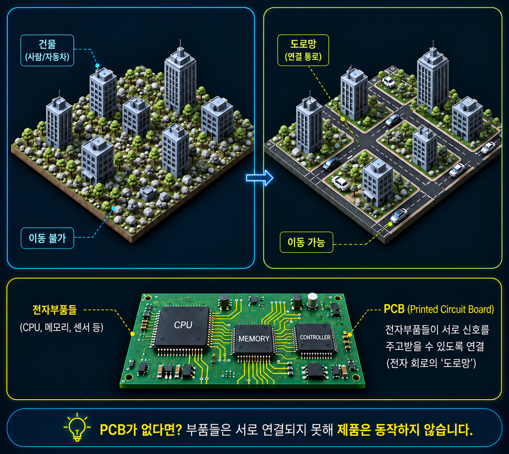
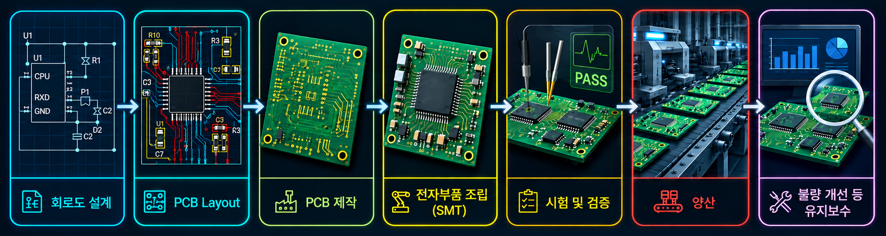
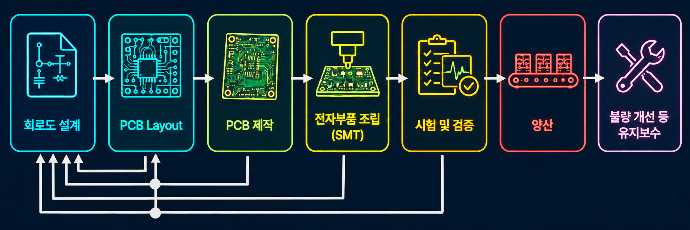
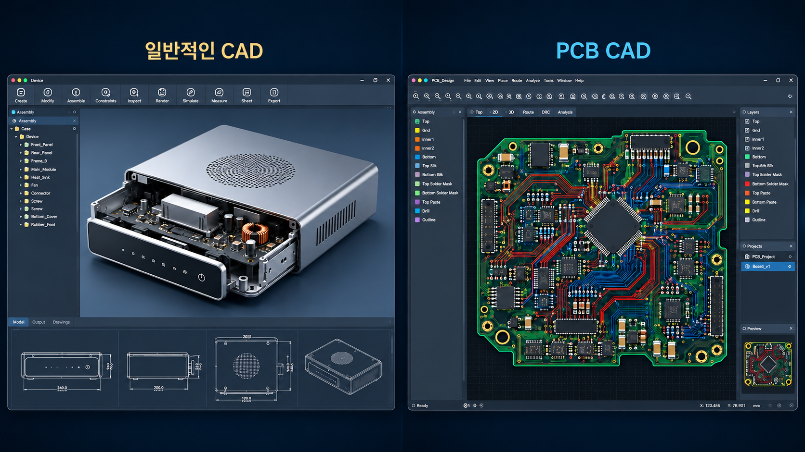
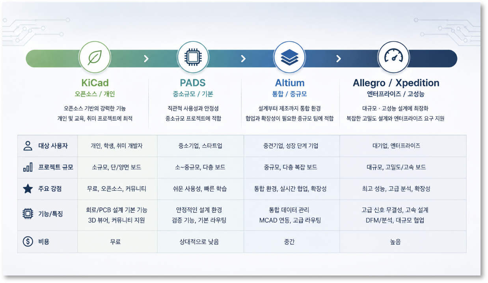

전자제품 개발의 기본, PCB (Printed Circuit Board)
1. PCB가 뭐예요?
우리가 매일 사용하는 스마트폰, 노트북, TV, 자동차, 의료기기, 산업용 장비까지 전기로 작동되는 모든 제품에는 PCB (Printed Circuit Board, 인쇄회로기판)가 들어 있습니다.
PCB는 전자부품들이 서로 대화할 수 있도록 연결해 주는 ‘도로망’의 역할을 합니다.
도시를 생각해 본다면 아무리 멋진 건물들이 많아도 도로가 없다면 사람이나 자동차가 이동할 수 없습니다. 마찬가지로 CPU, 메모리, 센서 같은 전자부품이 아무리 뛰어나더라도 PCB가 없다면 서로 신호를 주고받을 수 없어 제품을 동작시킬 수 없습니다.
PCB는 단지 초록색 판으로 보일 뿐이지만, 실제 역할은 매우 중요합니다.

PCB는 다음과 같은 역할을 수행합니다.
- 전자부품을 정확한 위치에 고정하고 부품 간에 신호를 연결한다.
- 부품에 전원을 안정적으로 공급한다.
- 부품에서 발생하는 열을 분산시킨다.
- 고속 신호가 높은 품질로 이동할 수 있도록 한다.
- 제품의 성능을 결정한다.
즉, PCB는 단순한 판 모양의 부품을 넘어 전자제품의 핵심요소입니다. 예를 들어 최신 스마트폰에는 천 개 이상의 부품이 하나의 PCB 위에 배치됩니다. 자동차의 ECU(전자제어장치) 역시 PCB 없이는 동작할 수 없습니다.
따라서 전자제품 개발에서는 PCB가 단순한 부품이 아니라 제품의 성능과 품질을 결정하는 핵심 요소로 여겨집니다.
2. PCB 개발 프로세스 이해하기
많은 사람들이 PCB 개발이라고 하면 "부품을 배치시키고 선을 연결하는 작업" 정도로 생각합니다. 하지만 실제 개발은 훨씬 복잡한 과정을 거칩니다.
주요 개발 과정을 요약하면 다음과 같습니다.

1) 회로도(Schematic) 설계
제품이 수행해야 하는 기능을 표현하는 단계입니다. 사용할 부품들을 선택하고 어떤 방식으로 연결할지를 묘사합니다. 건축으로 비유하면 건물의 설계도를 그리는 과정입니다.
2) PCB Layout
회로도에 표현된 구조를 실제 PCB 위에 구현하는 과정입니다. 사용되는 부품들이 고정될 위치를 정하고 전기신호가 지나가는 길을 설계합니다.
단순히 부품을 연결하기만 하는 것이 아니라 신호의 품질, 전원 안정성, 발열, 제조성, 조립성 등을 모두 고려해야 합니다.
3) PCB 제작(Fabrication)
앞서 설계된 데이터를 이용하여 실제 PCB를 제작합니다. 구리가 입혀진 판에서 전기가 흐르는 길만 남기고 나머지 부분을 제거해서 신호가 지나가는 길을 만듭니다. 이런 판을 여러 개 적층하여 입체교차로처럼 신호가 교차해 지나갈 수 있도록 합니다.
4) 전자부품 조립(SMT)
만들어진 PCB 위에 전자부품들을 고정합니다. 전용 장비를 이용해서 자동으로 배치(SMT, Surface Mount)한 후, 열을 가하여 완전히 고정합니다. 정밀함을 요구하며, 설계할 때에 제조성이 고려되어 있지 않다면 불량이 발생할 수 있습니다.
5) 시험(Test)
조립된 PCB가 정상적으로 동작하는지 확인합니다. 이 과정에서는 전원이 들어오는지, 전기신호가 정상인지, 부품이 작동하는지, 발열은 없는지 등의 품질을 확인합니다.
6) 양산
시험이 완료되면 대량 생산을 시작합니다. 양산 단계에서는 품질 관리와 생산 효율이 매우 중요합니다.
7) 유지보수
제품이 출시된 이후에도 불량 수정, 성능개선 및 기능추가, 부품 단종 대응 등을 위해 수정이 발생합니다. PCB 개발은 제품 출시로 끝나는 것이 아니라 제품이 단종될 때까지 이어지는 과정입니다.
PCB의 개발은 앞단계로 되돌아가 수정하는 과정이 반복되며 진행됩니다.
앞서 살펴본 단계들을 한 번에 진행해서 실제 제품이 탄생하는 경우는 거의 없습니다.
예를 들어 PCB Layout을 진행하다가 "부품을 배치할 공간이 부족하다", "부품이 단종되었다" 등의 문제가 발견되면 다시 회로도로 돌아가 부품을 변경하고 PCB Layout을 이어가야 합니다.
또는, 시험 과정에서 문제가 발견되면 다시 PCB Layout 수정 → 제조 → 시험을 반복할 수도 있습니다.

이러한 반복 과정을 Iteration(이터레이션)이라고 합니다. 좋은 PCB는 처음부터 완벽하게 만들어지는 것이 아니라 여러 번의 개선 과정을 거쳐 완성됩니다.
PCB 개발은 단순히 부품을 배치하는 작업이 아니라 다양한 분야의 엔지니어가 함께 문제를 해결해 나가는 협업 과정이라고 할 수 있습니다.
3. PCB 설계툴은 무엇을 하는 소프트웨어인가?
PCB 설계툴(PCB CAD TOOL)은 전자제품을 설계하기 위한 전문 소프트웨어입니다. 일반적으로 "CAD"라고 하면 기구 설계에서 사용하는 2D·3D 도면용 프로그램을 떠올리는 경우가 많습니다. 하지만 PCB용 CAD는 목적이 다릅니다.

기구 CAD로는 전자제품의 외형이나 기계장치를 설계하고, PCB CAD로 회로도와 PCB를 설계합니다.
PCB 설계툴은 다음과 같은 기능을 제공합니다.
회로도 설계
부품을 선택하고 연결하여 전자회로를 작성하고 회로를 검증하여 PCB Layout을 준비합니다.
PCB Layout
부품을 배치하고 배선을 설계합니다.
부품 관리(Library)
각 부품의 회로 심볼(Symbol), 풋프린트(Footprint), 부품속성정보 등을 관리합니다.
설계 규칙 검사(DRC/ERC)
배선 간격, 신호 연결 방식, 전기적 문제 등을 자동으로 검사합니다. 사람이 놓칠 수 있는 실수를 미리 발견하여 개발 기간과 비용을 줄여 줍니다.
3D 검증
설계된 PCB를 3차원으로 확인하여 부품간 간섭 여부, 높이 제한, 케이스 등 기구 부품과의 충돌 등을 검토합니다.
제조 데이터 생성
PCB 제작과 SMT 조립에 필요한 Gerber, BOM, 부품좌표데이터 등의 데이터를 생성합니다.
즉 PCB용 CAD는 단순히 그림을 그리는 프로그램이 아니라 설계부터 제조까지 이어지는 모든 정보를 관리하는 플랫폼이라고 볼 수 있습니다.
4. PCB 설계툴은 왜 여러 종류가 있을까?
PCB 설계툴은 하나만 존재하지 않습니다. 자동차에도 경차부터 대형 트럭까지 다양한 종류가 있는 것처럼 PCB 설계툴도 목적에 따라 다양하게 사용됩니다.
대표적인 선택 기준은 다음과 같습니다.
따라서 "가장 좋은 PCB CAD"라는 것은 존재하지 않고, 사용 목적에 가장 적합한 PCB CAD를 선택하는 것이 중요합니다.
5. 대표적인 PCB 설계툴
다양한 PCB 설계툴이 사용되고 있으며, 각각 강점과 특징이 다릅니다. 아래 내용은 전체적인 이해를 위한 간략한 소개이며, 각 제품은 이후 별도의 콘텐츠에서 자세히 다룰 예정입니다.

| 설계툴 | 특징 | 대략적인 가격대 |
|---|---|---|
| Altium Designer | 직관적인 사용자 인터페이스와 풍부한 기능을 갖춘 대표적인 중·고급 PCB 설계툴 | 연간 수백만 원 수준의 구독형 |
| Cadence Allegro | 대형 기업에서 많이 사용하는 고성능 플랫폼으로 초고속·고다층 설계에 강점 | 수천만 원 이상 (구성에 따라 상이) |
| KiCad | 오픈소스 기반의 무료 PCB 설계툴로 개인, 교육기관, 스타트업에서 널리 사용 | 무료 |
| Siemens PADS | 산업용 장비와 중급 규모의 PCB 설계에 많이 사용되는 솔루션 | 수백만 원~수천만 원 |
| Siemens Xpedition | 대규모 협업과 초고난도 PCB 설계를 위한 기업용 플랫폼 | 수천만 원 이상 (구성에 따라 상이) |
최근에는 클라우드 협업, 데이터 관리, AI 기반 자동화 기능이 빠르게 발전하면서 PCB 설계툴도 단순한 CAD 프로그램에서 전자제품 개발 플랫폼으로 진화하고 있습니다.
마무리
PCB는 전자부품을 연결하는 단순한 기판이 아니라, 전자제품의 성능과 품질을 좌우하는 핵심 인프라입니다.
또한 PCB 개발은 회로도 설계부터 PCB Layout, 제조, 조립, 시험, 양산, 유지보수까지 이어지는 긴 여정이며, 각 단계는 반복적인 개선 과정을 통해 완성도를 높여 갑니다.
이러한 개발 과정을 효율적으로 수행하기 위해 PCB 설계툴이 사용되며, 제품의 특성과 개발 환경에 따라 다양한 설계툴이 활용됩니다.
이번 글에서는 PCB 개발의 전체적인 흐름을 살펴보았습니다. 이어서 PCB 설계의 출발점이 되는 회로도(Schematic)와 PCB Layout에 대해 더 자세히 알아보겠습니다.